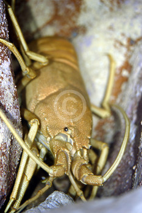

Monday, September the 19th, 2011
back to: title, date or indexes
You will be pleased to hear that my lobster research continues apace, quietly, diligently, but with moments of high drama. In case any of you doubt that I am learning some startling facts, here is a little quiz.
What type of lobster am I describing?
It is found in the waters off Western Samoa. It is musical. It is furry. It is magnificent.
You will find the correct answer below the picture.

The answer is : the musical furry lobster, Palibythus magnificus.
I am not making this up.